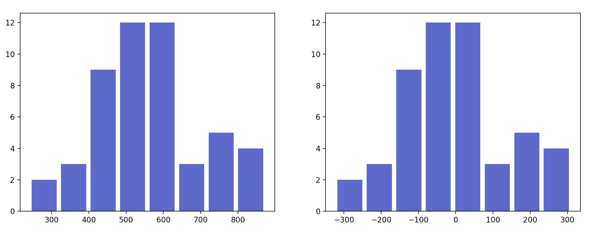

01 Teach : Team Activity - Python Practice
Overview
This activity is designed to be completed in teams during class time.
In this activity you'll be practicing elements of Python that will be useful in your programming this semester.
You've been hired by ACE Ice Cream Inc. to study their sales data. They suspect that ice cream sales are positively correlated with the temperature, meaning that when the temperature increases, so do ice cream sales. They would like to quantify this.
Objectives
Make sure you have a Python environment set up for data science work.
Review basic statistics used in data science.
Practicing using the numpy library.
A Word on Notation
When referring to a list or set of things in the formulas below, we'll use a capital letter, such as $X$.
When referring to a single item from that list, we'll use the lowercase letter, $x$.
The letter $n$ almost always refers to the number of items in a collection.
The symbol $x_1$ means the first item in the collection $X$, and $x_i$ means the "ith" item in the collection $X$.
The sigma symbol means to add all of the values over a range. For example:
$$ total = \sum_{i=1}^{n} x_i $$
Means the "total" can be calculated by adding all of the values in $X$ from $x_1$ (the first value) to $x_n$ (the "nth" or last value).
In some formula, sigma ranging from 1 to n is abbreviated as simply: $\Sigma$
Statistics Review
The following is a review of some basic statistics used in data science that you'll use in this activity. After completing this activity, you may want to refer back to this section and review it again in greater detail.
Mean, Median, and Mode
Many data science operations require us to do something with the mean, median, and / or mode of a collection of items.
To refer to the mean value of a list $X$, we'll use the symbol $\bar{x}$ (pronounced "x-bar").
To calculate $\bar{x}$, we add up all of the values in the list, and divide the sum by the total number of items, $n$:
$$\bar{x} = \frac{\sum x_i}{n}$$
This can be calculated in Python fairly easily:
# Verbose version
def mean(X):
total = sum(X)
length = len(X)
return total / length
# More compact version
def mean(X):
return sum(X) / len(X)One of the advantages of python is the number of built in modules it has to accomplish common tasks. One such module is the statistics module
import statistics
X = [1,4,4,5,2,500]
mean = statistics.mean(X)
median = statistics.median(X)
mode = statistics.mode(X)
print("Mean {0}, Median {1}, Mode {2}".format(mean, median, mode))Mean 86, Median 4.0, Mode 4Notice how the mean is strongly affected by the large outlier of 500, while the median is not affected. For this reason, we sometimes prefer the median over the mean in certain situations.
While the statistics module is fine for casual work, the numpy library has optimized versions of these functions which not only work directly with numpy arrays, but are orders of magnitude faster than the standard library versions. This is because many of numpy's functions are implemented in C.
DeMean
To "demean" a list of values is to subtract the mean value from each item in the list.
This technique is sometimes called "centering the data", because if you were to graph the data on a number line, the mean is the point at which the line could be "balanced", and subtracting the mean from each item causes that balance point to shift to 0.
So if you start with this list:
[1, 4, 5, 3, 2]
# The mean is: (1 + 4 + 5 + 3 + 2) / 5 = 3After demeaning it (subtracting 3 in this case), you end up with:
[-2, 1, 2, 0, -1]Notice that the mean of these new numbers is 0. Subtracting a dataset's mean from each item in the dataset will always have this effect.
Here's are two histogram plots of some random data. The chart on the left shows the original data, the one on the right is the same data after it has been "demeaned"
Notice how the shape of the histogram has not changed, but that the bins are now centered over 0.
Dot Product
The dot product (AKA inner product) of two lists is calculated by multiplying corresponding items together and summing up the results. For example, for two lists, $X$ and $Y$ (which must be of identical length), their dot product would be:
$$ X \cdot Y = \sum_{i=1}^{n} x_iy_i $$
In other words, given these two lists:
X = [1, 2, 3]
Y = [5, 6, 7]Their dot product would be:
(1 * 5) + (2 * 6) + (3 * 7) = 38Variance
The variance (often referred to as $s^2$ or "Var") tells us how much variability or spread there is in the data. It can be calculated by dividing the "sum of squares" by $n - 1$.
$$s^2 = \frac{\sum (x_i - \bar{x}) ^ 2}{n-1}$$
In other words, imagine you have 3 items: [3,4,5]. The mean ($\bar{x}$) is 4. So you would first "demean" each item by subtracting the mean from the item, then you would square that result. Finally, you add all of those squared values together:
# Demean the items, by subtracting the mean from each one
3 - 4 = -1
4 - 4 = 0
5 - 4 = 1
# Square the differences
-1 * -1 = 1
0 * 0 = 0
1 * 1 = 1
# Add together all of the squared values:
sum of squares = 1 + 0 + 1Notice that if we hadn't squared the demeaned values, adding them all together would have just given us 0. As mentioned previously, this is true for any set of data, because demeaning the data "recenters" the mean to be at 0.
To avoid this problem without giving up the other statistical advantages of centering the data, we square the differences before adding them together.
Standard Deviation
The standard deviation ($s$), is simply the square root of the variance.
Like the variance, it also describes the spread of the data, but in a way that is more intuitive to understand because it uses the same units as the original data.
Covariance
The covariance of two lists, $X$ and $Y$, will tell us how the values in $X$ change in relation to the values in $Y$. (For example, does $Y$ increase as $X$ decreases, or vice versa, and if so, by what proportion?)
It can be calculated as follows:
$$\text{Covariance(X,Y)} = \frac{\Sigma(x-\bar{x})(y-\bar{y})}{n-1}$$
Notice that the numerator of the covariance is the dot product of the demeaned versions of $X$ and $Y$.
Correlation Coefficient
The correlation coefficient ($r$) is a normalized version of the covariance. This makes it easier to use in comparisons.
Once you have functions to calculate the covariance and the standard deviation, calculating the correlation coefficient is easy.
The correlation coefficient can be calculated by dividing the covariance of $X$ and $Y$ by the square root of the variance of $X$ times the variance of $Y$:
$$r = \frac{Covariance(X,Y)}{\sqrt{Var(X) \cdot Var(Y)}}$$
Assignment
We'll use the numpy library and some basic statistics to build a SimpleCorrelator class to calculate the correlation between ice cream sales and temperature.
You are encouraged to use a Jupyter Notebook for this exercise. If you have installed Anaconda, you should be able to run jupyter notebook in a terminal window. This starts the network server and then opens the main notebook page in a browser. From here, you can create and run new notebooks.
To help get started, please download the following notebook: cs450_01_python_practice.ipynb
Part I: Build the class
First, create a python class called
SimpleCorrelatorthat has the following methods:A constructor that takes two arguments,
xandyand stores them as member variables.A method called
xwhich will return thexdata.A method called
ywhich will return theydata.
Create the following numpy arrays containing sales and temperature data:
# sales sales = np.array([464.37,520.38,531.62,532.25,605.11,649.96, 432.75,438.40,410.72,598.27,437.15,441.57, 873.65,517.76,540.26,619.77,794.61,617.84, 351.75,727.77,504.56,564.19,697.12,461.50, 847.23,240.27,597.32,846.17,703.07,718.93, 622.53,544.62,510.13,608.06,597.89,487.62, 544.40,459.84,372.08,614.82,510.07,738.32, 756.48,360.73,271.03,533.69,586.78,743.36, 471.53,579.69]) # temperatures temps = np.array([73.75,66.56,87.54,78.79,82.35,80.50, 76.09,74.13,74.83,76.13,76.41,72.08, 86.30,72.82,75.10,81.44,84.11,85.19, 70.34,81.89,78.31,78.35,89.29,77.31, 84.41,71.94,80.34,90.42,83.31,83.32, 76.81,74.50,73.16,77.07,81.04,77.14, 75.20,70.03,72.63,80.29,66.07,82.50, 83.00,69.97,61.72,77.11,76.07,85.83, 72.72,75.16])Create an instance of your
SimpleCorrelatorclass, passing in yoursalesandtempsdata as x and y, respectively.
Part II: Create some statistical functions
Add a
data_summarymethod to yourSimpleCorrelatorclass that will calculate and return a string containing the size, mean, variance, and standard deviation of both thexandydatasets.You should use the numpy methods to calculate these statistics.
Print out the results of the
data_summarymethod to make sure it works as expected.summary = myInstance.data_summary() print(summary) # prints something like (your numbers will be different): X - Summary size: 50, mean: 23.3, variance: 123, stdev: 12.3 Y - Summary size: 50, mean: 123.3, variance: 233, stdev: 142.3Override the
__repr__method of your class so that when you print your class instance, it will print the results of yourdata_summarymethod:print(myInstance) # prints something like (your numbers will be different): X - Summary size: 50, mean: 23.3, variance: 123, stdev: 12.3 Y - Summary size: 50, mean: 123.3, variance: 233, stdev: 142.3
Part III: Calculate the correlation coefficient
Add a method called
correlationto your class that returns the correlation coefficient as a single value.Note that there are several ways you could get this value. You could calculate it manually using the formulas provided above, or you could use a numpy method to do so.
However, many numpy methods will return a matrix of values. You will need to make sure that your method returns a scalar (single value) which represents the correlation between X and Y.
For example, this correlation coefficient matrix:
X Y X 1.0 0.4 Y 0.4 1.0 Shows that X and Y have a correlation coefficient of 0.4. Notice that X and Y are each perfectly correlated with themselves (X vs X and Y vs Y both have values of 1.0). Also notice that X vs Y and Y vs X have the same correlation coefficients.
So if this were our correlation coefficient matrix, then our
correlationmethod should return a value of0.4.It may not make sense to return a matrix of values in this situation, but often we're generating correlation coefficients between many different variables, trying to determine which are mostly tightly correlated with each other.
If everything works correctly, the answer you get should be around
0.8.Instructor code: cs450_01_python_practice_teacher.ipynb
Instructor Help
Please do not open the instructor code until you have worked on this assignment for the class period. At that point, if you are still struggling to complete any of these sections you are welcome to use this code to help guide you through the remaining sections:
Submission
You are welcome to complete this exercise after class (either by yourself or with others), before submitting the quiz.
When complete, report on your progress with the accompanying I-Learn quiz.